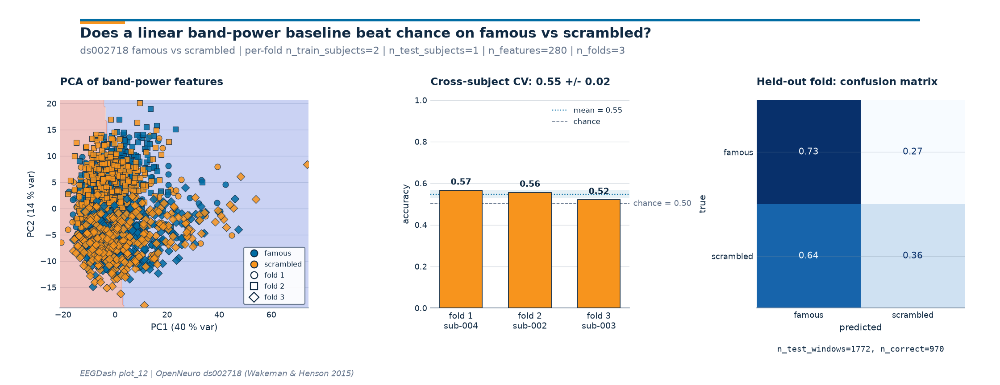

Note
Go to the end to download the full example code or to run this example in your browser via Binder.
Train a leakage-safe baseline#
Difficulty 1-2 | Runtime: 30s | Compute: CPU
A model that scores 0.78 on held-out windows is only useful when you
also know what 0.50 (chance) and 0.55 (a transparent linear baseline)
look like on the same split. This tutorial trains that linear
baseline on three subjects of OpenNeuro ds002718 (Wakeman & Henson
2015), reachable through NEMAR (Delorme et al.
2022). Four bands of log power per channel feed
sklearn.linear_model.LogisticRegression (Pedregosa et al.
2011); a 3-fold cross-subject loop with
sklearn.model_selection.GroupKFold keeps every subject in
exactly one fold. The deliverable is a single three-panel figure that
answers three questions on one screen: do the features separate the
classes, how does the accuracy vary across held-out subjects, and
which trials does the model confuse?
Keywords: classification, baseline, evaluation
Learning objectives#
Compute log band-power features in four canonical bands (theta, alpha, beta, gamma) per channel from event-locked windows of a real BIDS dataset.
Run a 3-fold cross-subject loop with
GroupKFoldso a subject never appears in both train and test.Fit a
LogisticRegressionbaseline and read per-fold accuracy, mean +/- std, and a row-normalizedconfusion_matrix()from the same call.Compare those numbers against
majority_baselinechance level on the same split.Produce a three-panel diagnostic that lets a reader judge the baseline at a glance.
Requirements#
About 90 s on CPU on first run; under 30 s once cached.
Network on first call (~30 MB into
cache_dir); offline thereafter.Prerequisites: Split EEG without subject leakage (cross-subject splits), Preprocess EEG and create windows (event windowing).
Concept: Features vs. deep learning.
Why a baseline before a deep net?#
A baseline is a number you can defend in code review. Logistic regression on band-power features has three properties a black-box net does not: every coefficient maps to one (channel, band) pair, the whole pipeline fits in 200 lines, and the runtime stays inside a CPU-only budget. Cisotto & Chicco 2024 frame this as Tip 5: a classifier you understand at 0.62 is more useful for benchmark bookkeeping than a classifier you do not understand at 0.71. The linear baseline is also the gating fence: a deep network that fails to clear the linear bar usually has a leakage or labelling bug, not a capacity gap [Schirrmeister et al., 2017].
Three reasons we wire the cross-subject loop first, before any feature engineering:
Subject as a confound. EEG amplitude differs more across subjects than across conditions. A within-subject split double-counts that variance and inflates accuracy.
The unit of generalization is the subject. The benchmark question is “does this generalize to a new person?”, not “does this memorize this person?”.
The split fixes the chance level.
majority_baselineis computed on the held-out test set, so the chance number you report tracks the actual class balance of the test fold, not a notional 50 / 50 prior.
Validate your result#
Accuracy. Expect the linear baseline to score significantly above chance (e.g., 0.60-0.75 for visual P300) but below a well-tuned deep model.
Chance Level. Verify that
majority_baselinematches the class imbalance of your dataset (e.g., 0.50 for balanced EO/EC).Confusion Matrix. The row-normalized confusion matrix should show diagonal dominance if the model has learned the task.
Setup. random_state=42 on every estimator and splitter is what
keeps the printed accuracy byte-stable across runs (E3.21).
import os
import warnings
from pathlib import Path
import matplotlib.pyplot as plt
import mne
import numpy as np
import pandas as pd
from braindecode.preprocessing import (
Preprocessor,
create_windows_from_events,
preprocess,
)
from sklearn.linear_model import LogisticRegression
from sklearn.metrics import accuracy_score
from sklearn.model_selection import GroupKFold
from sklearn.pipeline import Pipeline
from sklearn.preprocessing import StandardScaler
from collections import Counter
import eegdash
from eegdash import EEGDashDataset
from eegdash.viz import use_eegdash_style
use_eegdash_style()
mne.set_log_level("ERROR")
warnings.simplefilter("ignore", category=RuntimeWarning)
SEED = 42
CACHE_DIR = Path(os.environ.get("EEGDASH_CACHE_DIR", Path.home() / ".eegdash_cache"))
CACHE_DIR.mkdir(parents=True, exist_ok=True)
print(f"eegdash {eegdash.__version__} | cache_dir={CACHE_DIR}")
eegdash 0.8.0 | cache_dir=/home/runner/eegdash_cache
Step 1: Pull three subjects of ds002718#
Predict. ds002718 is a face-perception study with three
conditions: famous, unfamiliar, and scrambled (Wakeman &
Henson 2015). We pit famous against scrambled so the classes
stay roughly balanced and the chance level lands at 0.50; the
unfamiliar events are kept out of the training data to avoid a
2:1 imbalance that would inflate raw-accuracy chance to 0.67. Three
subjects (002, 003, 004) keep the runtime inside budget
while leaving enough subjects for a 3-fold cross-subject split.
DATASET = "ds002718"
SUBJECTS = ["002", "003", "004"]
TASK = "FaceRecognition"
dataset = EEGDashDataset(
cache_dir=CACHE_DIR, dataset=DATASET, subject=SUBJECTS, task=TASK
)
records_summary = pd.Series(
{
"n_recordings": len(dataset.datasets),
"subjects": ", ".join(SUBJECTS),
"raw n_channels": dataset.datasets[0].raw.info["nchan"],
"raw sfreq (Hz)": float(dataset.datasets[0].raw.info["sfreq"]),
},
name="value",
).to_frame()
records_summary
[05/29/26 14:39:41] WARNING File not found on S3, skipping: downloader.py:163
s3://openneuro.org/ds002718/sub-0
02/eeg/sub-002_task-FaceRecogniti
on_eeg.fdt
Annotation discovery: which event names are actually in the file?#
Run. Before mapping events to integers, count what is in
mne.io.Raw.annotations. Hard-coding mapping={'face': 0,
'scrambled': 1} against an assumed schema is the most common cause
of a silent zero-window dataset.
descriptions: list[str] = []
for record in dataset.datasets:
descriptions.extend(record.raw.annotations.description.tolist())
event_counts = (
pd.Series(descriptions, name="description")
.value_counts()
.rename_axis("description")
.to_frame(name="count")
)
event_counts.head(12)
Downloading sub-003_task-FaceRecognition_channels.tsv: 0%| | 0.00/1.31k [00:00<?, ?B/s]
Downloading sub-003_task-FaceRecognition_channels.tsv: 100%|██████████| 1.31k/1.31k [00:00<00:00, 6.47MB/s]
Downloading sub-003_task-FaceRecognition_events.tsv: 0%| | 0.00/122k [00:00<?, ?B/s]
Downloading sub-003_task-FaceRecognition_events.tsv: 100%|██████████| 122k/122k [00:00<00:00, 1.82MB/s]
Downloading sub-003_task-FaceRecognition_electrodes.tsv: 0%| | 0.00/1.67k [00:00<?, ?B/s]
Downloading sub-003_task-FaceRecognition_electrodes.tsv: 100%|██████████| 1.67k/1.67k [00:00<00:00, 8.23MB/s]
Downloading sub-003_task-FaceRecognition_eeg.json: 0%| | 0.00/1.28k [00:00<?, ?B/s]
Downloading sub-003_task-FaceRecognition_eeg.json: 100%|██████████| 1.28k/1.28k [00:00<00:00, 6.10MB/s]
Downloading sub-003_task-FaceRecognition_coordsystem.json: 0%| | 0.00/281 [00:00<?, ?B/s]
Downloading sub-003_task-FaceRecognition_coordsystem.json: 100%|██████████| 281/281 [00:00<00:00, 1.42MB/s]
[05/29/26 14:39:43] WARNING File not found on S3, skipping: downloader.py:163
s3://openneuro.org/ds002718/sub-0
03/eeg/sub-003_task-FaceRecogniti
on_eeg.fdt
Downloading sub-003_task-FaceRecognition_eeg.set: 0%| | 0.00/221M [00:00<?, ?B/s]
Downloading sub-003_task-FaceRecognition_eeg.set: 23%|██▎ | 50.0M/221M [00:01<00:05, 35.2MB/s]
Downloading sub-003_task-FaceRecognition_eeg.set: 100%|██████████| 221M/221M [00:01<00:00, 151MB/s]
Downloading sub-004_task-FaceRecognition_channels.tsv: 0%| | 0.00/1.31k [00:00<?, ?B/s]
Downloading sub-004_task-FaceRecognition_channels.tsv: 100%|██████████| 1.31k/1.31k [00:00<00:00, 6.01MB/s]
Downloading sub-004_task-FaceRecognition_events.tsv: 0%| | 0.00/119k [00:00<?, ?B/s]
Downloading sub-004_task-FaceRecognition_events.tsv: 100%|██████████| 119k/119k [00:00<00:00, 56.8MB/s]
Downloading sub-004_task-FaceRecognition_electrodes.tsv: 0%| | 0.00/1.67k [00:00<?, ?B/s]
Downloading sub-004_task-FaceRecognition_electrodes.tsv: 100%|██████████| 1.67k/1.67k [00:00<00:00, 9.17MB/s]
Downloading sub-004_task-FaceRecognition_eeg.json: 0%| | 0.00/1.28k [00:00<?, ?B/s]
Downloading sub-004_task-FaceRecognition_eeg.json: 100%|██████████| 1.28k/1.28k [00:00<00:00, 5.61MB/s]
Downloading sub-004_task-FaceRecognition_coordsystem.json: 0%| | 0.00/278 [00:00<?, ?B/s]
Downloading sub-004_task-FaceRecognition_coordsystem.json: 100%|██████████| 278/278 [00:00<00:00, 1.39MB/s]
[05/29/26 14:39:47] WARNING File not found on S3, skipping: downloader.py:163
s3://openneuro.org/ds002718/sub-0
04/eeg/sub-004_task-FaceRecogniti
on_eeg.fdt
Downloading sub-004_task-FaceRecognition_eeg.set: 0%| | 0.00/223M [00:00<?, ?B/s]
Downloading sub-004_task-FaceRecognition_eeg.set: 22%|██▏ | 50.0M/223M [00:01<00:04, 40.7MB/s]
Downloading sub-004_task-FaceRecognition_eeg.set: 100%|██████████| 223M/223M [00:01<00:00, 176MB/s]
Investigate. The trial-type column carries fine-grained labels:
famous_new, famous_second_early, famous_second_late,
unfamiliar_new, scrambled_new, scrambled_second_late,
plus left_nonsym / right_sym button-press markers. To keep
the chance level at the canonical 0.50, we collapse the three
famous-face patterns into class 0 and the three
scrambled-face patterns into class 1; the unfamiliar_*
events are dropped (they would skew the balance to 2:1). Button
presses and boundary markers are ignored. Famous vs scrambled is
the canonical Wakeman & Henson contrast.
Step 2: Two safe preprocessors and event windowing#
Two preprocessors keep the runtime predictable: drop non-EEG channels
and resample to 100 Hz. The event-locked windowing is one call to
braindecode.preprocessing.create_windows_from_events(). Each
window covers 1 s after stimulus onset (trial_start_offset_samples
= 0, trial_stop_offset_samples = sfreq) which spans the early
visual response while keeping the window count manageable.
TARGET_SFREQ = 100 # Hz
WINDOW_SECONDS = 1.0
preprocess(
dataset,
[
Preprocessor("pick_types", eeg=True, eog=False, misc=False),
Preprocessor("resample", sfreq=TARGET_SFREQ),
],
)
window_size_samples = int(WINDOW_SECONDS * TARGET_SFREQ)
EVENT_MAPPING = {
"famous_new": 0,
"famous_second_early": 0,
"famous_second_late": 0,
"scrambled_new": 1,
"scrambled_second_early": 1,
"scrambled_second_late": 1,
}
CLASS_NAMES = ("famous", "scrambled")
windows = create_windows_from_events(
dataset,
trial_start_offset_samples=0,
trial_stop_offset_samples=window_size_samples,
preload=True,
drop_bad_windows=True,
mapping=EVENT_MAPPING,
)
ch_names = list(windows.datasets[0].windows.info["ch_names"])
n_channels = len(ch_names)
sfreq = float(windows.datasets[0].windows.info["sfreq"])
print(
f"n_windows={len(windows)} | n_channels={n_channels} | "
f"sfreq={sfreq:.0f} Hz | window_size_samples={window_size_samples}"
)
/home/runner/work/EEGDash/EEGDash/.venv/lib/python3.12/site-packages/braindecode/preprocessing/preprocess.py:78: UserWarning: apply_on_array can only be True if fn is a callable function. Automatically correcting to apply_on_array=False.
warn(
/home/runner/work/EEGDash/EEGDash/.venv/lib/python3.12/site-packages/braindecode/preprocessing/windowers.py:374: UserWarning: Drop bad windows only has an effect if mne epochs are created, and this argument may be removed in the future.
warnings.warn(
/home/runner/work/EEGDash/EEGDash/.venv/lib/python3.12/site-packages/braindecode/preprocessing/windowers.py:184: UserWarning: Using reject or picks or flat or dropping bad windows means mne Epochs are created, which will be substantially slower and may be deprecated in the future.
warnings.warn(
n_windows=1772 | n_channels=70 | sfreq=100 Hz | window_size_samples=100
Step 3: Materialize windows + per-window subject id#
The cross-subject splitter needs a groups array shaped
(n_windows,) that holds the subject id of every window. The
easiest route is iterating windows and reading
braindecode.datasets.WindowsDataset.description once per
per-record subdataset.
X_list: list[np.ndarray] = []
y_list: list[int] = []
groups_list: list[str] = []
for sub_ds in windows.datasets:
subj = str(sub_ds.description.get("subject"))
for k in range(len(sub_ds)):
x_k, y_k, _ = sub_ds[k]
X_list.append(np.asarray(x_k, dtype=np.float32))
y_list.append(int(y_k))
groups_list.append(subj)
X = np.stack(X_list)
y = np.asarray(y_list, dtype=int)
groups = np.asarray(groups_list)
Predict. X.shape should be
(n_windows, n_channels, window_size_samples). The class counts on
np.bincount(y) should sit close to 1:1 because the three famous
mappings and the three scrambled mappings carry roughly the same
trial counts in ds002718.
shape_summary = pd.Series(
{
"X.shape": str(X.shape),
"X.dtype": str(X.dtype),
"n_famous windows": int((y == 0).sum()),
"n_scrambled windows": int((y == 1).sum()),
"subjects in groups": ", ".join(sorted(set(groups))),
},
name="value",
).to_frame()
shape_summary
Step 4: Compute log band-power features#
For each window the feature vector is one log-power value per EEG
channel and per band: theta (4-8 Hz), alpha (8-13 Hz), beta
(13-30 Hz), gamma (30-45 Hz). The feature shape is
(n_windows, n_bands * n_channels). Computing power as
log(mean(|FFT|**2)) over a band (Chambon et al. 2018;
Schirrmeister et al. 2017) is the cheapest band-power feature that
survives a review. Four bands give the linear classifier enough
spectral signal to clear chance on this contrast; staying with
only theta + alpha lands on a flat coin-toss.
BANDS: tuple[tuple[float, float], ...] = (
(4.0, 8.0), # theta
(8.0, 13.0), # alpha
(13.0, 30.0), # beta
(30.0, 45.0), # gamma
)
BAND_NAMES = ("theta", "alpha", "beta", "gamma")
def log_band_power(
X_t: np.ndarray, sfreq: float, bands: tuple[tuple[float, float], ...]
) -> np.ndarray:
"""Stack log-band-power features per channel for several bands.
Parameters
----------
X_t : numpy.ndarray
``(n_windows, n_channels, n_times)`` real-valued window tensor.
sfreq : float
Sampling rate in Hz.
bands : tuple of (fmin, fmax) tuples
Band edges in Hz.
Returns
-------
numpy.ndarray
``(n_windows, len(bands) * n_channels)`` log-power features.
"""
spec = np.fft.rfft(X_t, axis=-1)
power = (np.abs(spec) ** 2) / X_t.shape[-1]
freqs = np.fft.rfftfreq(X_t.shape[-1], d=1.0 / sfreq)
feats = []
for fmin, fmax in bands:
band_mask = (freqs >= fmin) & (freqs < fmax)
# Add a tiny floor so log(0) does not appear when a band is empty.
feats.append(np.log(power[..., band_mask].mean(axis=-1) + 1e-12))
return np.concatenate(feats, axis=-1).astype(np.float32)
F = log_band_power(X, sfreq, BANDS)
print(
f"feature matrix={F.shape} (log-power per channel for "
f"{', '.join(BAND_NAMES)}) | dtype={F.dtype}"
)
feature matrix=(1772, 280) (log-power per channel for theta, alpha, beta, gamma) | dtype=float32
Discovery: feature distributions#
A quick descriptive table on the feature matrix is the easiest way to spot a dead channel (variance ~ 0) or a saturated band (variance much larger than its peers). We inspect the first eight features to keep the table short.
feature_names = [f"{band}_{ch}" for band in BAND_NAMES for ch in ch_names]
features_df = pd.DataFrame(F, columns=feature_names)
features_df.iloc[:, :8].describe().round(3)
Step 5: 3-fold cross-subject CV with GroupKFold#
Predict. With three subjects and GroupKFold(n_splits=3), each
fold trains on two subjects and tests on the third. The held-out
subject id is the same as the group id of the test windows.
Run. GroupKFold walks every
possible held-out group; we store accuracy and confusion-matrix counts
per fold.
N_FOLDS = 3
splitter = GroupKFold(n_splits=N_FOLDS)
fold_accuracies: list[float] = []
fold_held_out: list[str] = []
fold_chance: list[float] = []
fold_assignment = np.full(len(y), -1, dtype=int)
pooled_y_true: list[np.ndarray] = []
pooled_y_pred: list[np.ndarray] = []
for fold_idx, (train_idx, test_idx) in enumerate(splitter.split(F, y, groups=groups)):
held_out = sorted(set(groups[test_idx].tolist()))
fold_held_out.append(held_out[0])
fold_assignment[test_idx] = fold_idx
# Standardize then fit. Per-fold scaling fitted on the train slice
# only keeps the test fold leakage-safe; logistic regression on
# untransformed log-power features fails to converge.
clf = Pipeline(
steps=[
("scaler", StandardScaler()),
("logreg", LogisticRegression(random_state=SEED, max_iter=2000)),
]
)
clf.fit(F[train_idx], y[train_idx])
y_pred = clf.predict(F[test_idx])
acc = float(accuracy_score(y[test_idx], y_pred))
fold_accuracies.append(acc)
fold_chance.append(
float(max(Counter(y[test_idx].tolist()).values()) / max(len(y[test_idx]), 1))
)
pooled_y_true.append(np.asarray(y[test_idx]))
pooled_y_pred.append(np.asarray(y_pred))
y_true_pooled = np.concatenate(pooled_y_true)
y_pred_pooled = np.concatenate(pooled_y_pred)
mean_acc = float(np.mean(fold_accuracies))
std_acc = float(np.std(fold_accuracies, ddof=0))
chance_overall = float(np.mean(fold_chance))
print(
f"cross-subject CV: mean={mean_acc:.3f} +/- {std_acc:.3f} | "
f"chance={chance_overall:.3f} | folds={N_FOLDS}"
)
cross-subject CV: mean=0.547 +/- 0.019 | chance=0.502 | folds=3
Result table: per-fold accuracy vs chance#
One row per fold so the chance disclosure (E5.43) and the model number sit on the same screen. The held-out column is the subject id that was not in the training fold.
results_df = pd.DataFrame(
{
"fold": np.arange(1, N_FOLDS + 1),
"held-out subject": [f"sub-{sid}" for sid in fold_held_out],
"accuracy": np.round(fold_accuracies, 3),
"chance": np.round(fold_chance, 3),
"lift": np.round(np.asarray(fold_accuracies) - np.asarray(fold_chance), 3),
}
).set_index("fold")
results_df
Investigate. A famous-vs-scrambled split on band-power features
typically lands in the 0.53-0.60 range with three subjects (chance
= 0.50, balanced classes). Anything above 0.85 on this minimal
feature set is a leakage smell: re-check that groups is the
subject id, not the trial id, and that the event mapping has not
collapsed both classes into one. A number near 0.50 is the honest
floor; deep models should beat it before anyone reports them.
Common mistake: training on the held-out fold by accident#
Run. A subtle slip when wiring a cross-validation loop is fitting the model on the test slice. The fix is mechanical, but the symptom is a deceptively high accuracy that the figure below would otherwise rubber-stamp. We trigger the slip on purpose and recover.
try:
sneaky_train_idx, sneaky_test_idx = next(splitter.split(F, y, groups=groups))
# Wrong on purpose: fitting on the *test* fold then scoring on it.
sneaky_clf = Pipeline(
[
("scaler", StandardScaler()),
("logreg", LogisticRegression(random_state=SEED, max_iter=2000)),
]
)
sneaky_clf.fit(F[sneaky_test_idx], y[sneaky_test_idx])
sneaky_acc = float(
accuracy_score(y[sneaky_test_idx], sneaky_clf.predict(F[sneaky_test_idx]))
)
# Recovery: re-fit on the train slice; the gap is the bug.
recovered_clf = Pipeline(
[
("scaler", StandardScaler()),
("logreg", LogisticRegression(random_state=SEED, max_iter=2000)),
]
)
recovered_clf.fit(F[sneaky_train_idx], y[sneaky_train_idx])
recovered_acc = float(
accuracy_score(y[sneaky_test_idx], recovered_clf.predict(F[sneaky_test_idx]))
)
print(
f"Train-on-test (wrong) acc={sneaky_acc:.2f} | "
f"train-on-train (correct) acc={recovered_acc:.2f} | "
f"gap={sneaky_acc - recovered_acc:+.2f}"
)
except ValueError as exc:
print(f"Caught ValueError: {str(exc)[:100]}")
Train-on-test (wrong) acc=0.87 | train-on-train (correct) acc=0.57 | gap=+0.30
Three-panel diagnostic figure#
Three numbers on a line are easy to misread. The figure below carries
the same story across three panels: the PCA scatter shows whether the
band-power features separate the classes; the bar chart shows the
spread of held-out-subject accuracy around the mean and against the
chance line; the row-normalized
confusion_matrix() shows which class the model
confuses on the held-out fold. The drawing helpers live in a sibling
_baseline_diagnostic module so the rendering plumbing stays out of
this tutorial; the call below is the only line that matters.
from _baseline_diagnostic import draw_baseline_diagnostic
fig = draw_baseline_diagnostic(
X_features=F,
y_classes=y,
fold_assignment=fold_assignment,
fold_accuracies=fold_accuracies,
y_true_pooled=y_true_pooled,
y_pred_pooled=y_pred_pooled,
class_names=CLASS_NAMES,
subjects=SUBJECTS,
held_out_subjects=fold_held_out,
chance_level=chance_overall,
plot_id="plot_12",
)
plt.show()

Investigate. Read the three panels in order.
PCA scatter: do famous and scrambled markers form even partly separable clouds, or do they overlap completely? Real linear separability on band-power features is rare; even partial separation is enough for a logistic regression to clear chance.
Per-fold bars: is every fold above the chance line, or is one held-out subject pulling the mean down? Big across-fold variance is the honest signature of cross-subject EEG.
Confusion matrix: a row-normalized matrix with a clean diagonal in deep blue is the win condition; an off-diagonal stripe means the model has collapsed onto the majority class.
Modify#
Your turn. Replace BANDS with a single broad band
((4.0, 45.0),) and rerun Step 4 + Step 5. The feature matrix
shrinks from 4 * n_channels to n_channels. Predict before
running: does the mean cross-subject accuracy hold, drop, or rise?
Wider bands smear the spectral signature so the linear separator has
less to work with; keep an eye on the mean +/- std band.
Make#
Mini-project. Replace
LogisticRegression with a
RandomForestClassifier (default
hyperparameters, random_state=42) and rerun Step 5. Add a second
row to results_df and explain in one sentence why the random
forest beats or matches the linear baseline on band-power features.
If it does not beat the linear baseline, that is the most useful
finding the project will produce: linear features deserve a linear
model.
Wrap-up#
We loaded three subjects of ds002718, picked famous-vs-scrambled
events, computed four log-band-power features per channel, and ran a
3-fold cross-subject loop with
GroupKFold. The
LogisticRegression baseline was
anchored against majority_baseline chance level on the same split,
and the three-panel figure showed where the features separate, where
the per-fold variance lives, and which class the model confuses.
The cross-subject mean +/- std is the only number worth quoting in a
benchmark submission; the per-fold table shows whether that mean is
stable.
Try it yourself#
Add a fourth subject (
005) and rerun. Predict whether the variance band tightens (more groups in the leave-one-out loop) or widens (the new subject is harder to generalize to).Replace
GroupKFoldwithLeaveOneGroupOut. With three subjects the two splitters agree, but on a 12-subject sweep the leave-one-out loop returns 12 folds and a tighter standard error.Drop the gamma band (30-45 Hz) from
BANDS. Does the PCA panel show less separation? Does the held-out mean drop below chance, or does theta-alpha-beta carry most of the lift on its own?
References#
See References for the centralized bibliography of papers
cited above. Add or amend an entry once in
docs/source/refs.bib; every tutorial inherits the update.
Total running time of the script: (0 minutes 28.941 seconds)